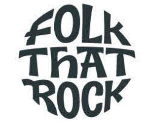

Trade Mark Journal No.2025/032 8 August 2025
UK00004241746 30 July 2025 (9,14,16,25,28,41)

- Class 9
- Audio and video recordings featuring performances by a musical artist, a musical band or a musical group; phonograph records featuring performances by a musical artist, a musical band or a musical group; compact discs featuring performances by a musical artist, a musical band or a musical group; optical discs featuring performances by a musical artist, a musical band or a musical group; DVD's featuring performances by a musical artist, a musical band or a musical group; multimedia software recorded on CD-ROM featuring performances by a musical artist, a musical band or a musical group; downloadable electronic publications in the nature of books, booklets, brochures, magazines, newsletters in the field of music; downloadable multimedia files containing music, video, audio and graphic images relating to music; computer mouse mats and mouse pads; sunglasses and spectacles.
- Class 14
- Precious metals and their alloys; jewellery; precious and semi-precious stones; horological and chronometric instruments; costume jewellery; bracelets; brooches; chains; charms; cuff links; earrings; lockets; medals; amulets; necklaces; pendants; ornamental pins; rings; tie clips; beads for making jewellery; clasps for jewellery; presentation boxes for jewellery; presentation boxes for watches; watches; wrist watches; watch straps; clocks; alarm clocks; clock cases; boxes of precious metal; coins; Trinkets [jewellery]; Key chains; key rings and fobs; works of art in precious metals; figurines, statues, statuettes and sculptures of precious metal; trophies, medals and awards in precious metals; badges of precious metal; ornaments [jewellery].
- Class 16
- Paper and cardboard; printed matter; bookbinding material; photographs; stationery and office requisites, except furniture; adhesives for stationery or household purposes; drawing materials and materials for artists; paintbrushes; instructional and teaching materials; plastic sheets, films and bags for wrapping and packaging; writing, drawing and marking instruments and cases therefor; wrapping and packaging materials; paper for gift wrapping; paper bags; tissues; tissue paper; boxes of cardboard or paper; coasters of paper or cardboard; paper napkins; paper bunting; paper banners; paper ribbons; paperweights; pens; pencils; pen and pencil cases; figurines made from paper or cardboard; prints; photographic prints; signed photographs; pictures; art pictures; paintings; posters; cards; greetings cards; gift tags; calendars; diaries; printed publications; books; handbooks; notebooks; brochures; catalogues; pamphlets; flyers; manuals; magazines; journals; albums; periodical publications; newspapers; newsletters; cartoon strips; comics; decalcomanias; adhesive transfers; adhesive wall decorations of paper; bumper stickers; pressure sensitive stickers; postage stamps; collectable cards; postcards; scoring cards; book covers; book marks; gift cards, printed gift certificates; printed educational materials; printed reports; printed programmes; souvenir programmes; printed promotional material; printed advertising publications; advertising signs of paper or cardboard; Printed paper signs; correspondence holders; desk mats; desk tidies; drawing paper; letterhead paper; memo pads; maps; Flags of paper.
- Class 25
- Clothing; footwear; headgear; shirts, t-shirts, polo shirts, sweatshirts, hooded sweatshirts, pullovers, fleece pullovers, jackets, fleece jackets, pants, shorts, underwear, belts; footwear, sport shoes, socks; scarves, bandanas; headwear, namely hats, caps and skull caps.
- Class 28
- Games, toys and playthings; toy figurines; dolls; playing cards; trading cards; snow globes; confetti; paper party hats; party balloons; party poppers; puppets; stuffed toys; novelty toys for parties; jigsaw puzzles; masks [playthings].
- Class 41
- Entertainment services, namely, live performances by a musical artist, musical bands or musical group and presentation of musical performances; Music entertainment services; entertainment, namely, live music concerts by a musical artist, musical band or musical group; entertainment, namely, personal appearances by a musical artist, musical band or a musical group; Music production services; production of audio and video recordings; production of musical performances and music videos; providing on-line non-downloadable audio content; providing on-line publications in the nature of books, booklets, brochures, magazines, newsletters in the field of music; live musical performances; entertainment ticket agency services; entertainment; organising of festivals; artistic management of performing artists; artistic management of musical shows; Dance events.
BURNSIDE MUSIC SERVICES LTD
Representative: FRKelly